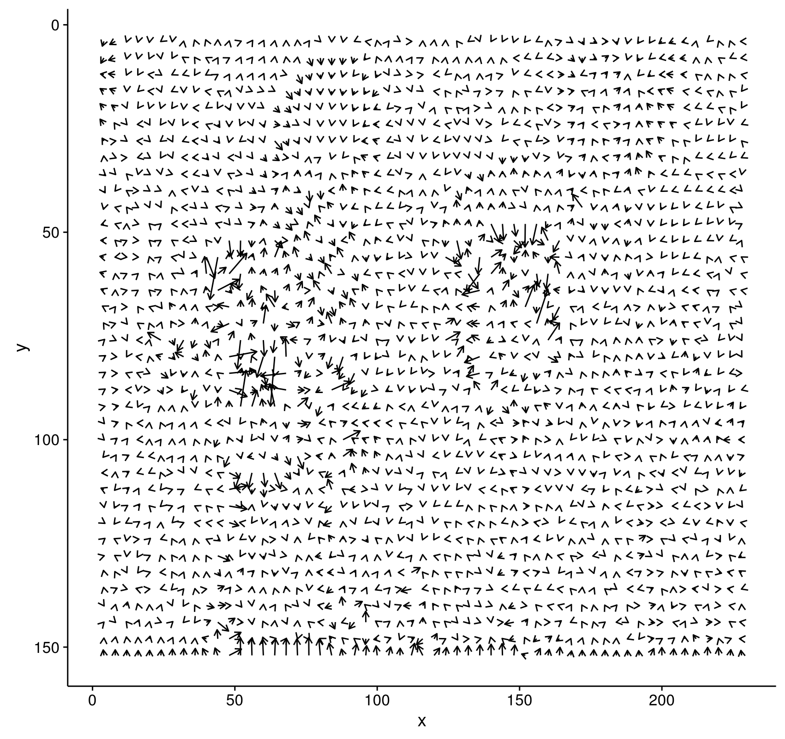
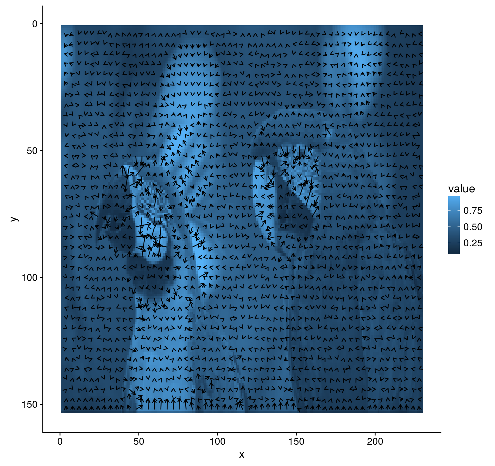
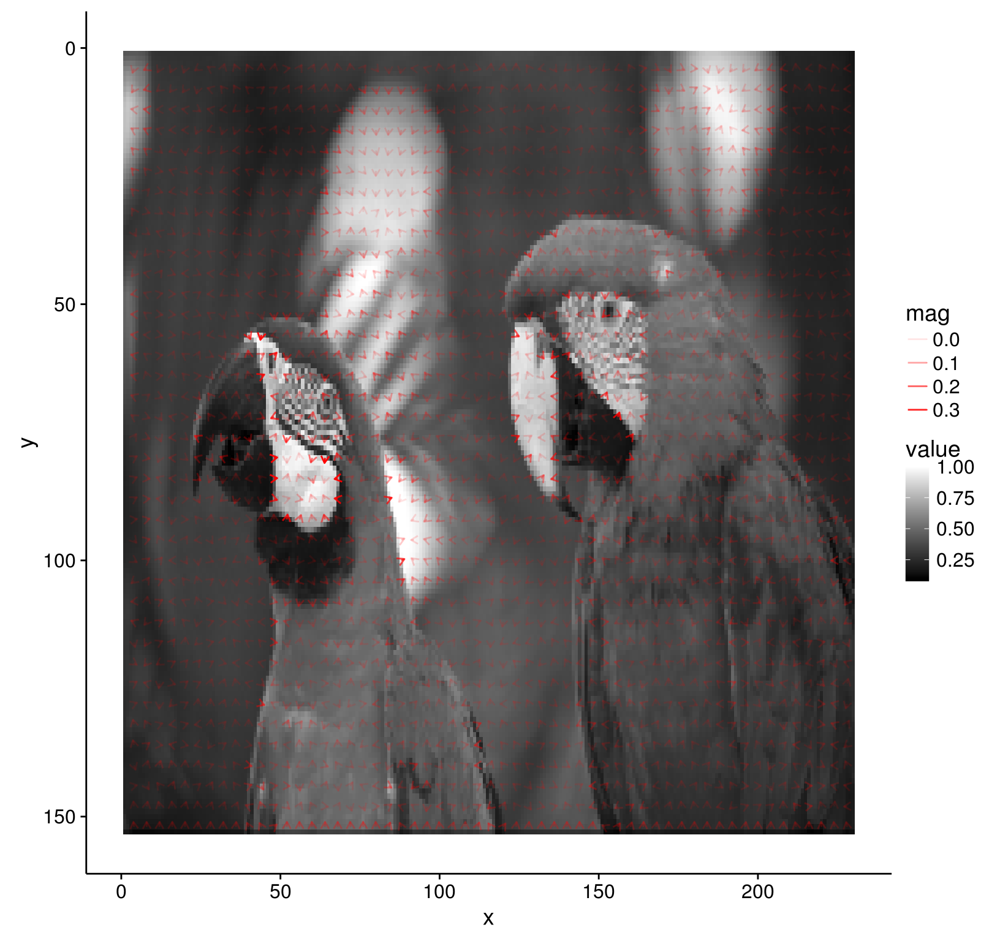

Plotting a gradient field
Simon Barthelmé (GIPSA-lab, CNRS)
This example shows how to use some tools from the Hadleyverse (dplyr,tidyr and ggplot2) to visualise the gradient of an image.
An effective way of visualising the image gradient is to see it as a vector field (a flow). At each pixel, the gradient gives a direction, which we can plot as an arrow.
The first step is to compute a gradient, using imgradient:
library(imager)
im <- load.example("parrots") %>% grayscale %>% imresize(.3)
gr <- imgradient(im,"xy")The next step is to convert the gradient to a data.frame:
library(dplyr)
names(gr) <- c("dx","dy")
dgr <- as.data.frame(gr)
head(dgr)## im x y value
## 1 dx 1 1 0.002725791
## 2 dx 2 1 0.004915455
## 3 dx 3 1 0.001172188
## 4 dx 4 1 -0.005908914
## 5 dx 5 1 -0.009227138
## 6 dx 6 1 -0.010336117tail(dgr)## im x y value
## 70375 dy 225 153 -0.04003334
## 70376 dy 226 153 -0.03974533
## 70377 dy 227 153 -0.03710804
## 70378 dy 228 153 -0.03330563
## 70379 dy 229 153 -0.03259190
## 70380 dy 230 153 -0.03420292The dx component and dy components are on separate rows. For plotting it’s more convenient to convert to a “wide” format:
dgr <- tidyr::spread(dgr,im,value)
head(dgr)## x y dx dy
## 1 1 1 0.002725791 0.02522680
## 2 1 2 0.002948136 0.05194833
## 3 1 3 0.002923065 0.05079837
## 4 1 4 0.003906697 0.04001060
## 5 1 5 0.005890858 0.02676697
## 6 1 6 0.008597386 0.02424785And we can now proceed with plotting:
##cowplot sets better defaults for ggplot2,
##replace with library(ggplot2) if you prefer
library(cowplot)## Loading required package: ggplot2##
## Attaching package: 'cowplot'## The following object is masked from 'package:ggplot2':
##
## ggsave##Subsample: take every fourth pixel
dgr.sub <- dplyr::filter(dgr,(x %% 4) ==0,(y %% 4) == 0)
#Compute end points of the arrows we'll plot, scaled so that they have a typical
#size of 1px or thereabouts
dgr.sub <- mutate(dgr.sub,xend=x+dx/sd(dx),yend=y+dy/sd(dy))
#Plot the gradient field
p <- ggplot(dgr.sub,aes(x,y))
p <- p+geom_segment(aes(xend=xend,yend=yend),arrow = arrow(length = unit(0.01, "npc")),col="black",alpha=1)
p+scale_y_reverse()
The outline of the parrots is visible but things would be nicer if we could just overlay the gradient field on top of the image. Fortunately, we can:
p <- as.data.frame(im) %>% ggplot(aes(x,y))+geom_raster(aes(fill=value))
p <- p+geom_segment(data=dgr.sub,aes(xend=xend,yend=yend),arrow = arrow(length = unit(0.01, "npc")),col="black",alpha=1)
p+scale_y_reverse()
The plot is still a bit messy but we can already see how the gradient always points towards image regions with higher luminance. We just need an additional bit of cleaning up to get a very clear picture:
dgr.sub <- dplyr::mutate(dgr.sub,mag=sqrt(dx^2+dy^2), #Gradient magnitude
dxs=dx/mag,dys=dy/mag,#Scale every vector to unit size
xend = x + dxs,yend = y +dys)
p <- as.data.frame(im) %>% ggplot(aes(x,y))+geom_raster(aes(fill=value))
p <- p+geom_segment(data=dgr.sub,aes(xend=xend,yend=yend,alpha=mag),arrow = arrow(length = unit(0.01, "npc")),col="red")
p+scale_y_reverse()+scale_fill_continuous(low="black",high="white")
Here’s everything wrapped up in a function:
gradfield <- function(im,subs=4)
{
gr <- imgradient(im,"xy")
names(gr) <- c("dx","dy")
dgr <- as.data.frame(gr) %>% tidyr::spread(im,value)
dgr <- dplyr::filter(dgr,(x %% subs) ==0,(y %% subs) == 0)
dgr <- dplyr::mutate(dgr,mag=sqrt(dx^2+dy^2), #Gradient magnitude
dxs=dx/mag,dys=dy/mag,#Scale every vector to unit size
xend = x + 2*dxs,yend = y +2*dys)
p <- as.data.frame(im) %>% ggplot(aes(x,y))+geom_raster(aes(fill=value))
p <- p+geom_segment(data=dgr,aes(xend=xend,yend=yend,alpha=mag),arrow = arrow(length = unit(0.01, "npc")),col="red")
p+scale_y_reverse()+scale_fill_continuous(low="black",high="white")
}
gradfield(grayscale(boats),6)